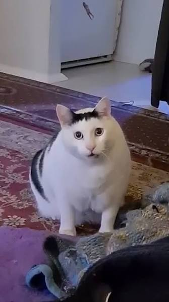
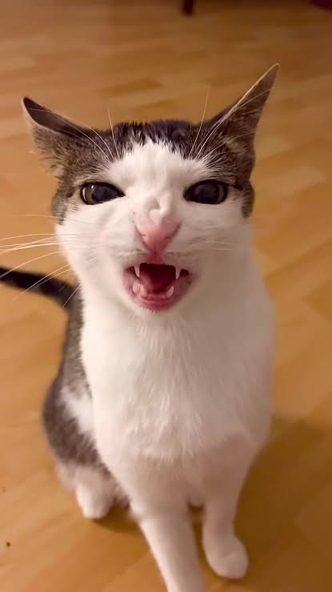
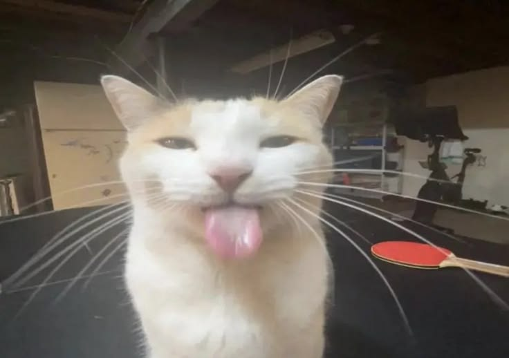
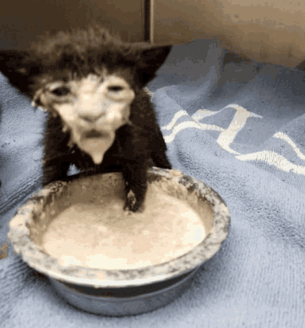

Like our whole executive team, Bender Cage earned his popularity on the Internet. He started up the nonprofit by meowing at the camera, which his owner posted online. The video was edited to have a funny "huh" sound instead of a meow, hence the nickname "huh." He soon gained popularity and gained the ability to proudly found Cat Food Corp. His biggest dream is to lobby to get the government to outlaw all other cat foods but wet or fresh food. Bender's vision for the company is to provide easy access to good, healthy food for cats.

Luna Greece's famous videos of her crunching on cat food are what gave her her nickname "Crunch." The videos of her scowling and making wide-eyed, expressive reactions to the food she's eating are her way of bringing attention to the issues present in the cat food market. Everything is too dry and too bland, according to her. That's why she's here at Cat Food Corp., using her financial knowledge, accounting skills, and passion for good, nutritious cat food to bring awareness to the realities of the cat food industry.

Milly has her own Instagram @fatfatmillycat and posts pictures of her tongue out occasionally, which prompted her followers to call her the "bleh" cat. Milly's Instagram posts are usually about something silly, or being silly, which she values heavily as the CR (like HR, but for cats) lead. Lack of silliness in Cat Food Corp. does result in immediate termination without warning, since silliness is one of her most important considerations when dealing with employees. In her free time, she's perfecting that "tongue-out" look for her followers.
